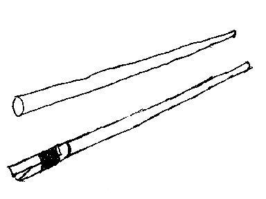
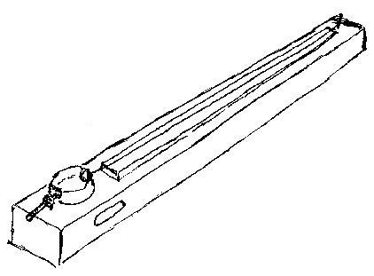

Instrument
 Ovan: fruppsar, utan respektive med munstycke. En frupps består av ett rör med en inre diameter på ca 10-20mm. Fruppsar utan munstycke trakterar man på samma sätt som bleckblåsinstrument. Fruppsen kan bestyckas med munstycke av enkelrörstyp, där röret förslagsvis kan tillverkas av smörgåsfettaskslock. För ljudillustrationer klicka på fruppsarna. Ovan: skrangelskvippsmunkemunk. Ensträngat instrument där strängens ena ände är fäst i en plåtask. Instrumentkroppen är i ett stycke tillverkat av trä. En greppbräda kan vara fastlimmad på kroppen. Efterssom plåtasken, och möjligtvis borrade hål i kroppen, är de enda håligheterna i instrumentet är elförstärkning att rekommendera i större sällskap.